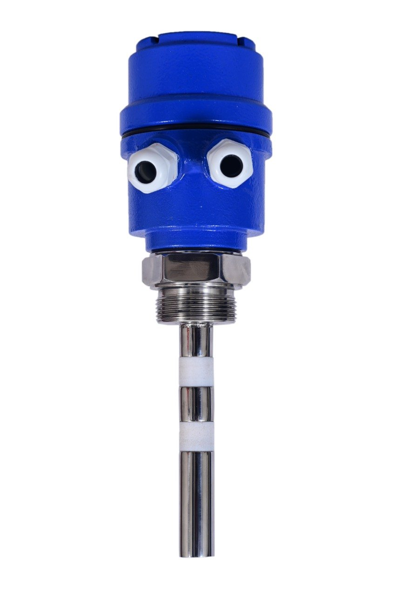
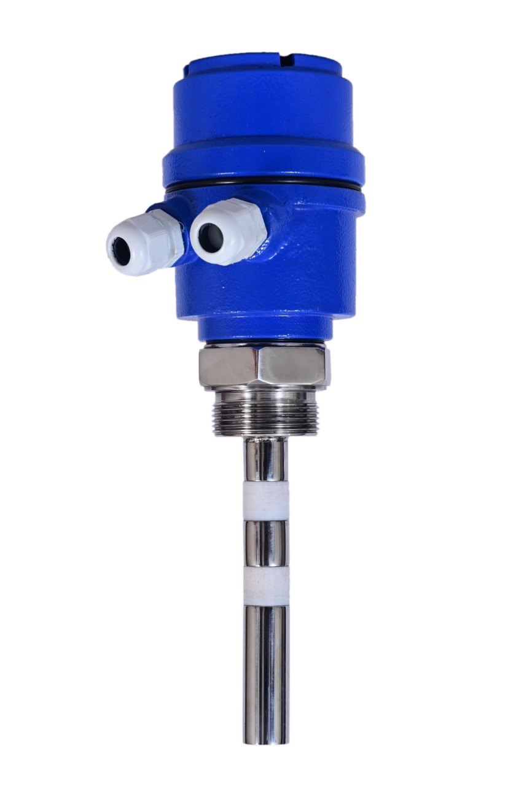
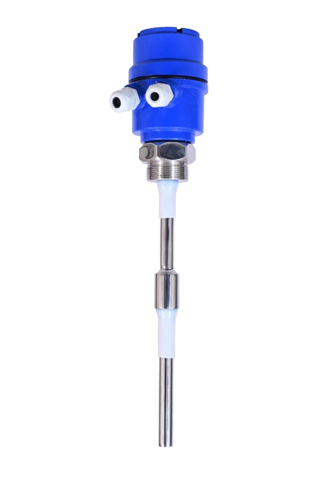

i.style.borderColor='#cbd5e1'); this.style.borderColor='var(--primary-cyan)';" style="width: 60px; height: 60px; object-fit: contain; background: #ffffff; padding: 3px; border-radius: 8px; cursor: pointer; transition: all 0.2s ease; border: 2px solid #cbd5e1;">
i.style.borderColor='#cbd5e1'); this.style.borderColor='var(--primary-cyan)';" style="width: 60px; height: 60px; object-fit: contain; background: #ffffff; padding: 3px; border-radius: 8px; cursor: pointer; transition: all 0.2s ease; border: 2px solid #cbd5e1;">The RFLS-100S is a compact RF admittance point level switch designed for level detection of dry bulk solids, powders, grains, and granules. Built with an active coat-guard shield, it ignores material coating and dust build-up on the probe, ensuring false-alarm-free operation in small bins, hoppers, and machines where space is limited.